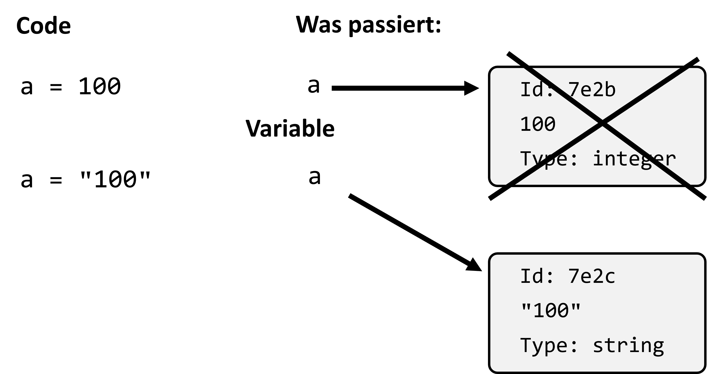

4. Variables#
Variables are an essential part of any program. They allow us to store data and use it in calculations. A common metaphor is to think of variables as boxes where we can store values. However, in Python and other programming languages, we more precisely refer to assignments: assigning a value to a variable name.
4.1. Variables in Python#
In Python, a variable is defined using the assignment operator =. The expression on the left side of = is the variable name, and the expression on the right is the value assigned to the variable.
Example:
a = 5
print(a / 6) # => 0.8333333333333334
Once a variable is defined, Python „remembers“ its value for the entire program session. In the example above, the variable a has the value 5 until it is reassigned. Variables can then be used in calculations or other operations:
b = 8
print(a + b) # => 13
4.1.1. Variables Can Change Their Value#
Variables in Python are not fixed. You can reassign new values to them at any time, even of a different data type. This means that a variable previously storing an integer (int) can later store a floating-point value (float) or even a string:
a = 100.5
print(a + b) # => 108.5
As mentioned, data types can change freely, so the following is also perfectly valid:
a = 100
print(2 * a)
# Now overwrite (technically: "reassign") the variable
a = "100"
print(2 * a)

Bemerkung
Note: Python’s flexible handling of variables is useful but can lead to errors if you accidentally change a variable’s type and later in your program expect it to have its original data type.
4.1.2. Meaningful Variable Names#
It is very helpful to give variables names that reflect the content or purpose of the stored data. A self-explanatory variable name makes the code easier to understand for others (and for yourself).
training_seconds = 18900
sec_per_hour = 60 * 60
training_hours = training_seconds / sec_per_hour
print(training_hours) # => 5.25
Here, the variable names are clear, making the code directly understandable. Using names like a, b, and c instead would make the code harder to read and understand.
4.1.3. Risky Variable Names#
Python allows variables to have almost any name, even names that match Python’s built-in functions. However, this should be avoided. For example, if you assign a variable the name print, you overwrite the built-in print() function and can no longer use it:
print = "my text"
Python allows this and does not raise an error.
However, just because you don’t get an error doesn’t mean it’s a good idea!
What happens if we now run print("hello world!")?
The takeaway: Avoid giving variables names that conflict with built-in functions.
4.1.4. Reserved Keywords#
Python has a list of reserved keywords that cannot be used as variable names because they are part of the language syntax. Examples include if, else, while, or for.
Attempting to create a variable with such a name results in a SyntaxError:
or = "outer region" # => SyntaxError: invalid syntax
You can find the complete list of reserved keywords here.
Mini Quiz:
What does the following code output?
x = 40
x = x + 2
print(x)
a) 40
b) 42
c) x + 2
d) Error, as x = x + 2 is mathematically incorrect
Which of the following variable names are OK?
a)print = "my text"
b)else = "my text"
c)sehr_wichtig = "my text"
d)übermäßig_wichtig = "my text"
e)ImportantText = "my text"
4.2. Rules for Variable Names#
Here are some simple but important rules for naming variables in Python:
Use lowercase letters and underscores
_to separate words to improve readability.Avoid reserved keywords or function names to prevent conflicts.
Use English: While variable names in other languages (e.g., German) are allowed, English is commonly preferred to make the code more accessible to others.
Be cautious with special characters: Avoid using umlauts (ä, ö, ü) or other special characters in variable names, as they may not be supported everywhere and could cause complications.
4.3. Debugging!#
Debugging refers to fixing errors (bugs) in the program code. We’ll explore debugging in more detail later, but even at the beginning, it’s helpful to get familiar with how Python (or the Python interpreter) reports errors in the code.
4.3.1. Debugging Exercises:#
What happens in a
printstatement if we leave out one or both parentheses?What happens if we try to print a string but leave out one or both quotation marks?
What happens if we try to add two numbers but use
++or+++instead of+?What happens if we write a
+or a0before a number, e.g.,05 - 2or+5 - 2?What happens if we add a space before
print("hello")?Use Python as a calculator: How many seconds are in 42 minutes and 42 seconds?